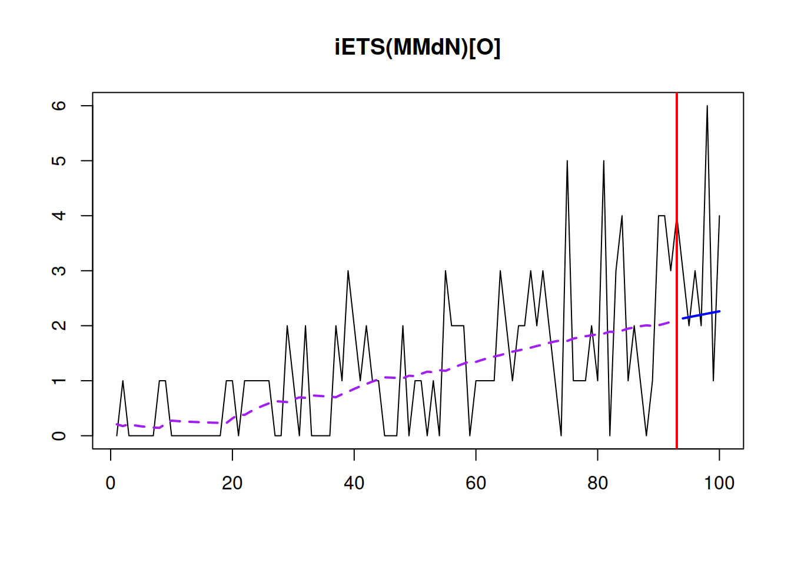
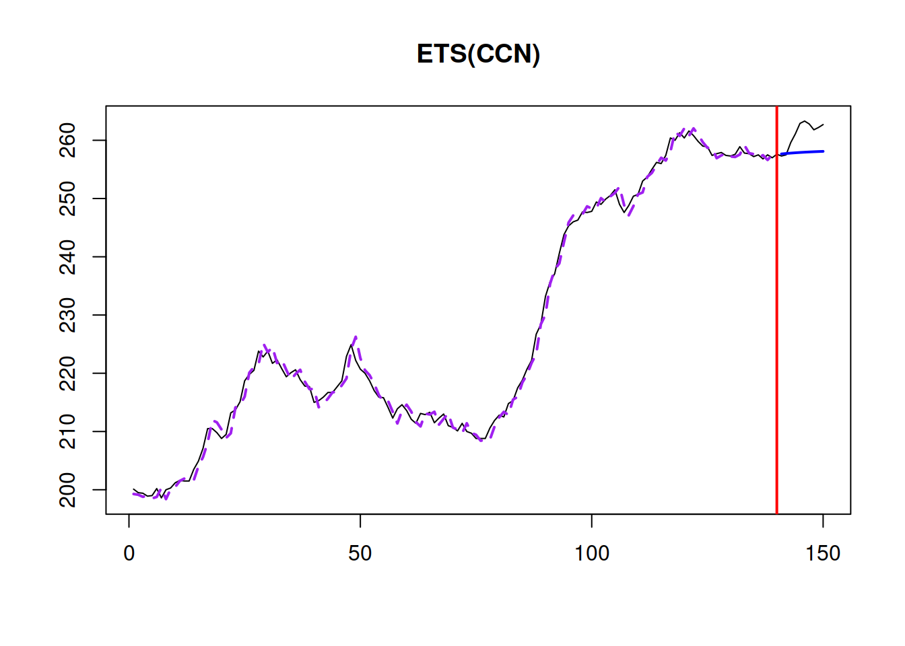

15.4 Forecasts combinations in ADAM
When it comes to achieving as accurate as possible forecasts in practice, the best and the most robust (in terms of not failing) approach is producing combined forecasts. The main motivation for combining comes from the idea that there is no one best forecasting method for everything - methods might perform very well in some conditions and fail in the others, and in practice it is typically not possible to say, which of the cases you face. Furthermore, the model selected on one sample might differ from the model selected for the same sample but with one more observation. Thus there is a model uncertainty (as defined by Chatfield, 1996) and the safer option is to produce forecasts from several models and then combine them to get the final forecast. This way, the potential damage from an inaccurate forecast hopefully will be reduced.
There are many different technique for combining forecasts, the non-exhaustive list includes:
- Simple average, which works fine as long as you do not have extremely poor methods;
- Median, which produces good combinations, when the pool of models is limited and might contain those that produce forecasts very different from the others (e.g. explosive forecasts). However, when a big pool of models is considered, then median might ignore important information and lead to decreases in accuracy, as noted by Jose and Winkler (2008). Stock and Watson (2004) conducted an experiment on macroeconomic data, and medians performed poorer than the other approaches (probably because of the high number of forecasting methods), while median-based combination worked well for Petropoulos and Svetunkov (2020), who considered only 4 forecasting methods;
- Trimmed and / or Winsorized mean, which drop extreme forecasts, when calculating the mean and as was shown by Jose and Winkler (2008) work well in case of big pools of models, outperforming medians and simple average;
- Weighted mean, which assigns weights to each forecast and produces a combined forecast based on them. While this approach sounds more reasonable than the others, there is no guarantee that it will work, because the weights need to be estimated and might change with the change of sample size or a pool of models. Claeskens et al. (2016) explain why in many cases the simple average approach outperforms weighted averages: it does not require estimation of weights and thus does not introduce as much uncertainty. However, when done smartly, combinations can be beneficial in terms of accuracy, as shown for example, in Kolassa (2011) and Kourentzes et al. (2019a).
The forecast combination approach implemented in ADAM is the weighted mean, based on Kolassa (2011), who used AIC weights as proposed by Burnham and Anderson (2004). The idea of this approach is to estimate all models in the pool, calculate information criteria (IC) for each of them (see discussion in Section 13.4 in Svetunkov (2021c)) and then calculate weights for each model. Those model that have lower ICs, will have higher weights, while the poorly performing ones will have the higher ones. The only requirement of the approach is for the parameters of models to be estimated via likelihood maximisation (see Section 11.1). It is not important, what model is used or what distribution is assumed, as long as the models are initialised and constructed in the same way and the likelihood is used in the estimation.
When it comes to prediction interval, the correct way of calculating them for the combination is to consider the joint distribution of all forecasting models in the pool and take quantiles based on that. However, Lichtendahl et al. (2013) showed that a simpler approach of averaging the quantiles works well in practice. It is fast and efficient in terms of obtaining well-calibrated intervals.
In R, adam() function supports the combination of ETS models via model="CCC" or any other combination of letters, as long as the model contains “C” in its name. For example, the function will combine all non-seasonal models if model="CCN" is provided. Consider the following example on Box-Jenkins series:
adamETSCCN <- adam(BJsales, "CCN", h=10, holdout=TRUE, ic="AICc")
plot(adamETSCCN,7)Figure 15.1: An example of combination of ETS non-seasonal models on Box-Jenkins time series.
In the example above, the function will estimate all non-seasonal models, extract AICc for each of them and then calculate weights, which we can extract for further analysis:
round(adamETSCCN$ICw,3)## ANN MAN AAdN MMN AMdN MNN AAN MAdN AMN MMdN
## 0.000 0.014 0.252 0.010 0.511 0.000 0.073 0.031 0.050 0.059As can be seen from the output of weights, the level models ETS(A,N,N) and ETS(M,N,N) were further away from the best model and as a result got weights very close to zero. The fitted values in Figure 15.1 are combined from all models, the residuals are equal to \(e_t = y_t - \hat{y}_t\), where \(\hat{y}_t\) is the combined value. The final forecast together with the prediction interval can be generated via the forecast() function:
plot(forecast(adamETSCCN,h=10,interval="prediction"))What the function does in this case is produces forecasts and prediction intervals from each model and then uses original weights to combine them. In fact, each individual model can be extracted and used separately, if needed. Here is an example with ETS(A,Ad,N) model from the estimated pool:
plot(forecast(adamETSCCN$models$AAdN,h=10,interval="prediction"))
Alternatively, if we do not need to consider all ETS models, we can provide the pool of models, including a model with “C” in its name. Here is an example of how pure additive models can be combined:
adamETSCCNPureAdditive <- adam(BJsales,
c("CCN","ANN","AAN","AAdN"),
h=10, holdout=TRUE,
ic="AICc")
plot(adamETSCCNPureAdditive,7)
The main issue with the combined ETS approach is that it is computationally expensive due to the estimation of all models in the pool and can also result in high memory usage. As a result, it is recommended to be smart in deciding, which models to include in the pool.
While adam() supports IC weights combination of ETS models only, it is also possible to combine ARIMA, regression models and models with different distributions in the framework. Given that all models are initialised in the same way and that the likelihoods are calculated using similar principles, the weights can be calculated manually using formula from Burnham and Anderson (2004):
\[\begin{equation}
w_i = \frac{\exp\left(-\frac{1}{2}\Delta_i\right)}{\sum_{j=1}^n \exp\left(-\frac{1}{2}\Delta_j\right)},
\tag{11.1}
\end{equation}\]
where \(\Delta_i=\mathrm{IC}_i - \min_{i=1}^n \left(\mathrm{IC}_i\right)\) is the information criteria distance from the best performing model, \(\mathrm{IC}_i\) is the value of information criterion and \(n\) is the number of models in the pool. For example, here how we can combine the best ETS with the best ARIMA and the ETSX(M,M,N) model in the ADAM framework, based on BICc:
# Prepare data with explanatory variables
BJsalesData <- cbind(as.data.frame(BJsales),
xregExpander(BJsales.lead,c(-5:5)))
# Apply models
adamModelsPool <- vector("list",3)
adamModelsPool[[1]] <- adam(BJsales, "ZZN",
h=10, holdout=TRUE,
ic="BICc")
adamModelsPool[[2]] <- adam(BJsales, "NNN",
orders=list(ar=3,i=2,ma=3,select=TRUE),
h=10, holdout=TRUE,
ic="BICc")
adamModelsPool[[3]] <- adam(BJsalesData, "MMN",
h=10, holdout=TRUE,
ic="BICc",
regressors="select")
# Extract BICc values
adamModelsICs <- sapply(adamModelsPool,BICc)
# Calculate weights
adamModelsICWeights <- adamModelsICs - min(adamModelsICs)
adamModelsICWeights[] <- exp(-0.5*adamModelsICWeights) /
sum(exp(-0.5*adamModelsICWeights))
names(adamModelsICWeights) <- c("ETS","ARIMA","ETSX")
round(adamModelsICWeights,3)## ETS ARIMA ETSX
## 0.524 0.424 0.052These weights can then be used for the combination of the fitted values, forecasts and prediction intervals:
adamModelsPoolForecasts <- vector("list",3)
for(i in 1:3){
adamModelsPoolForecasts[[i]] <- forecast(adamModelsPool[[i]],
h=10, interval="pred")
}
finalForecast <- cbind(sapply(adamModelsPoolForecasts,
"[[","mean") %*% adamModelsICWeights,
sapply(adamModelsPoolForecasts,
"[[","lower") %*% adamModelsICWeights,
sapply(adamModelsPoolForecasts,
"[[","upper") %*% adamModelsICWeights)
colnames(finalForecast) <- c("Mean", "Lower bound (2.5%)",
"Upper bound (97.5%)")
finalForecast <- ts(finalForecast,
start=start(adamModelsPoolForecasts[[i]]$mean))
finalForecast## Time Series:
## Start = 141
## End = 150
## Frequency = 1
## Mean Lower bound (2.5%) Upper bound (97.5%)
## 141 257.6606 254.9157 260.3975
## 142 257.7257 253.3694 262.0406
## 143 257.7914 251.9204 263.6989
## 144 257.8451 250.4265 265.2423
## 145 257.8945 248.9003 266.8818
## 146 257.9394 247.4099 268.5009
## 147 257.9873 245.8507 270.1660
## 148 258.0230 244.2682 271.8778
## 149 258.0570 242.7660 273.5834
## 150 258.0924 241.0754 275.3955In order to see how the forecast looks like, we can plot it via graphmaker() function from greybox:
graphmaker(BJsales, finalForecast[,1],
lower=finalForecast[,2], upper=finalForecast[,3],
level=0.95)Figure 15.2: Final forecast from the combination of ETS, ARIMA and ETSX models.